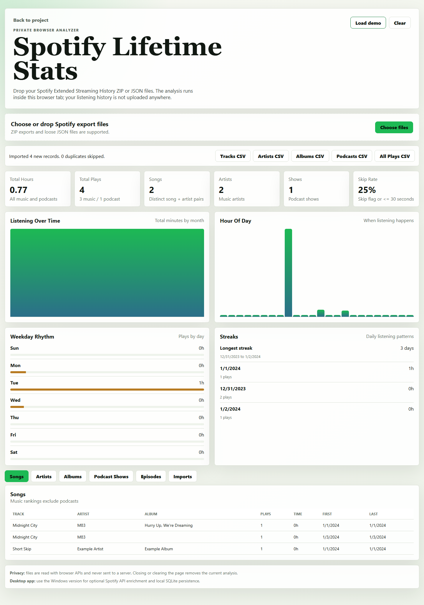

What it does
Users can load Spotify Extended Streaming History exports, then inspect lifetime totals, top songs, artists, albums, podcast shows, listening timelines, hourly patterns, streaks, and downloadable CSV summaries.
A privacy-first analytics dashboard for Spotify Extended Streaming History. The web version analyzes ZIP and JSON exports directly in the browser; the Windows app adds local SQLite persistence and optional Spotify API enrichment.

Users can load Spotify Extended Streaming History exports, then inspect lifetime totals, top songs, artists, albums, podcast shows, listening timelines, hourly patterns, streaks, and downloadable CSV summaries.
The web analyzer reads files with browser APIs and does not upload listening history. The desktop app stores data locally on the user's machine and supports optional Spotify API enrichment.
The desktop app uses Node, SQLite, Electron, and an embedded local HTTP server. The web app is a static GitHub Pages-compatible port with browser-side ZIP parsing and aggregation logic.